Project 4: Image Warping and Mosaicing
For Part A, I used homographies to combine overlapping photos into mosaics and straighten two posters using rectification.
A.1: Photos
I used three sets of images: the Gateway, the Undergraduate Academic Building, and my living room. I took 3 photos of the Undergraduate Academic Building instead of 2, so I used the center photo as the reference. I also reused the living room photos for the two poster rectifications.
Gateway Building
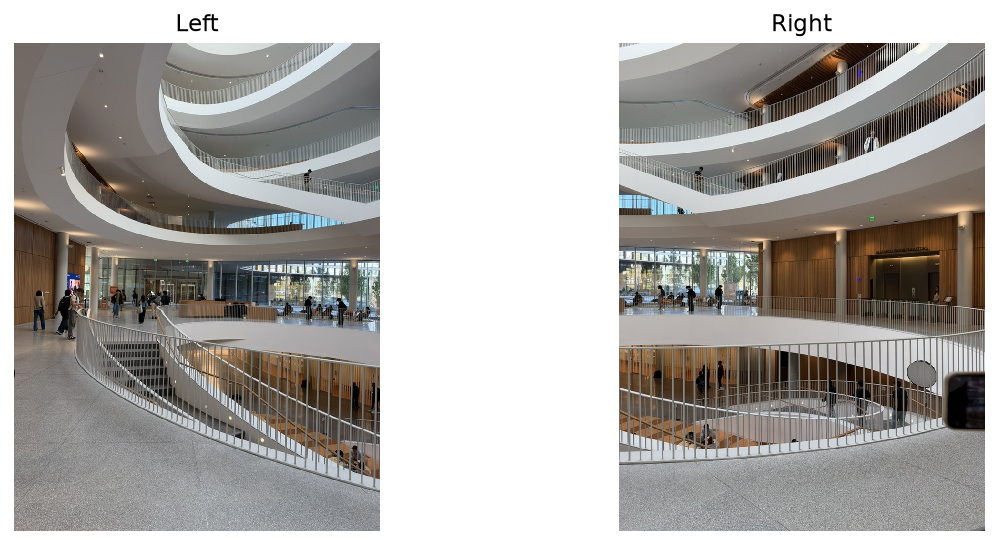
Undergrad Academic Building
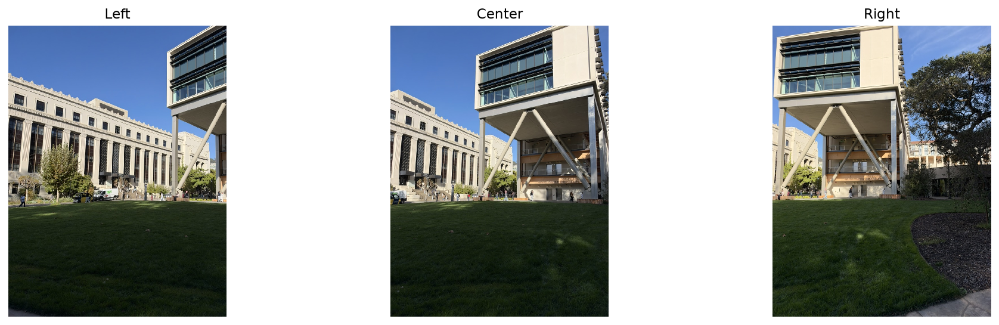
My living room
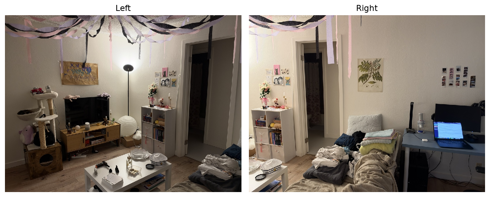
A.2: Recovering Homographies
A homography maps a point in one photo to its matching point in another. I used (x, y) coordinates and wrote the mapping as [u, v, 1]T ∼ H [x, y, 1]T. Fixing the bottom-right entry of H to 1 leaves eight values to solve for.
For each match, the two rows of Ah = b are [x, y, 1, 0, 0, 0, −ux, −uy] h = u and [0, 0, 0, x, y, 1, −vx, −vy] h = v, where h = [h₁₁, h₁₂, h₁₃, h₂₁, h₂₂, h₂₃, h₃₁, h₃₂]ᵀ.
I kept 16 point pairs for each alignment, starting from feature-match candidates and checking them visually. That gave 32 equations for eight unknowns, which I solved with np.linalg.lstsq. The same numbers below mark matching features in the two photos.
Gateway Building: left → right
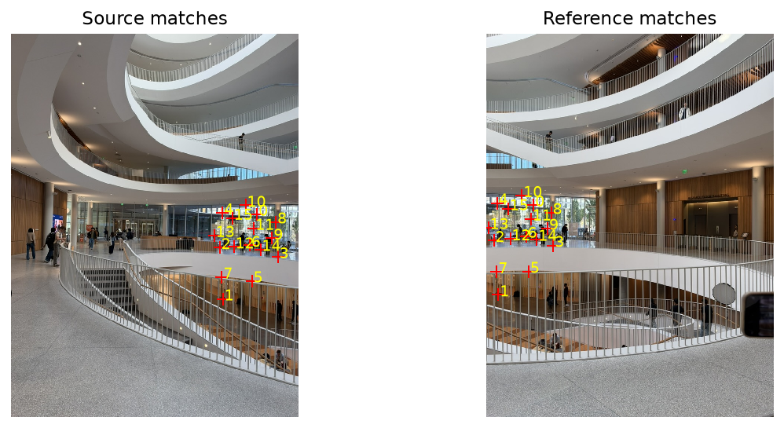
The recovered homography was H = [2.193285e+00, 1.438911e-02, -1.188463e+03; 7.323659e-01, 2.050017e+00, -5.344068e+02; 1.566461e-03, 3.456653e-05, 1.000000e+00], with semicolons separating the rows.
Undergrad Academic Building: left → center
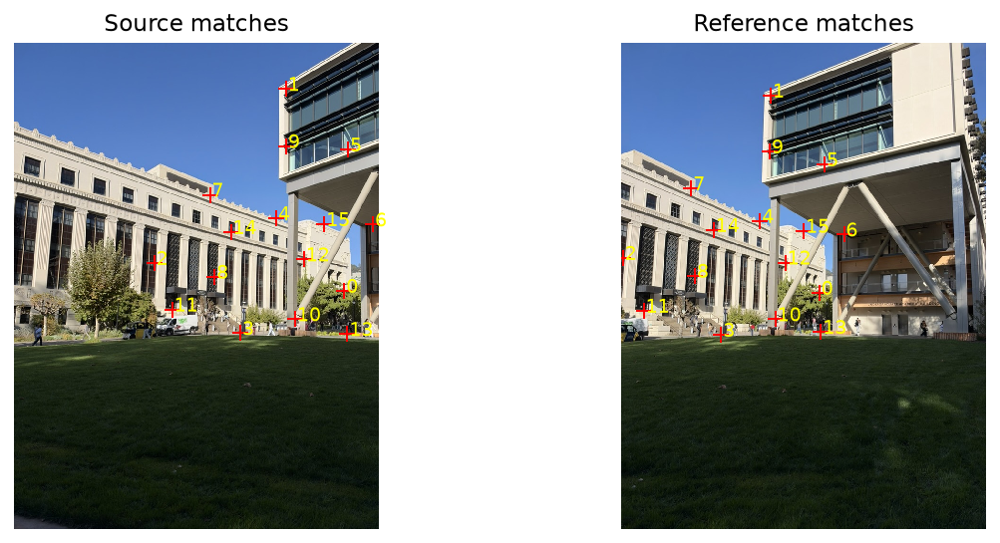
The recovered homography was H = [1.589003e+00, -2.438773e-02, -4.544299e+02; 4.210840e-01, 1.396781e+00, -2.169723e+02; 7.594619e-04, 2.577901e-06, 1.000000e+00], with semicolons separating the rows.
Undergrad Academic Building: right → center
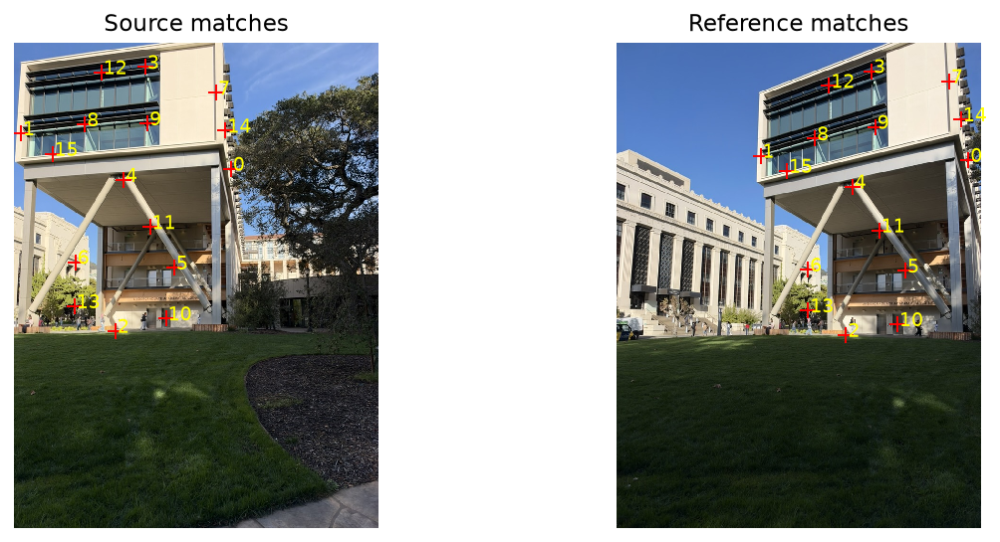
The recovered homography was H = [6.696020e-01, 5.628914e-03, 2.903722e+02; -2.325010e-01, 8.774241e-01, 7.237596e+01; -4.156576e-04, -1.631420e-05, 1.000000e+00], with semicolons separating the rows.
My living room: left → right
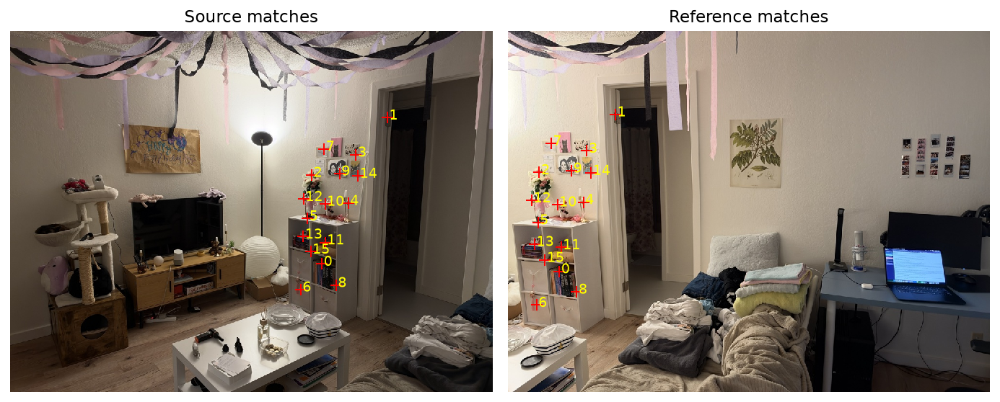
The recovered homography was H = [2.829590e+00, 2.088274e-01, -1.685088e+03; 5.485135e-01, 2.553214e+00, -4.500920e+02; 1.947070e-03, 4.900117e-05, 1.000000e+00], with semicolons separating the rows.
A.3: Warping and Rectification
I first transformed the image corners to find the output bounds. Then I worked backward: for each output pixel, I applied H⁻¹ to find its position in the source photo. This avoids the gaps that forward mapping can leave behind. A separate mask keeps track of valid pixels, so a black pixel in the photo still counts as image content.
Nearest neighbor rounds the source coordinates and takes one pixel. Bilinear interpolation uses the four surrounding pixels, with weights based on the fractional offsets dx and dy: I(x, y) = (1−dx)(1−dy) I₀₀ + dx(1−dy) I₁₀ + (1−dx)dy I₀₁ + dx dy I₁₁.
To test the warps, I mapped the four corners of each poster to a rectangle. I used an 8:5 ratio for the birthday poster and 3:4 for the botanical print. The aspect ratios are estimates.
Birthday poster
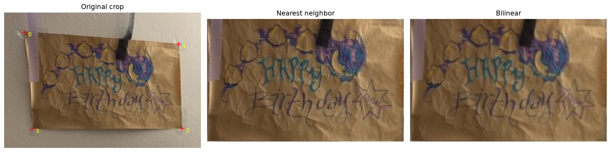
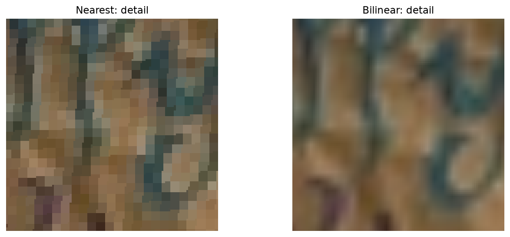
The recovered homography was H = [3.605236e+00, -2.813738e-01, -7.796916e+02; -3.038134e-01, 4.004131e+00, -7.076510e+02; -6.460835e-04, -1.425624e-04, 1.000000e+00], with semicolons separating the rows.
Plant poster
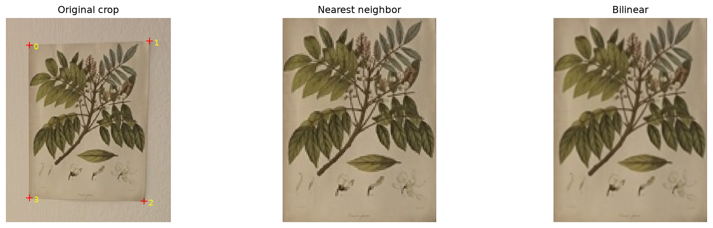
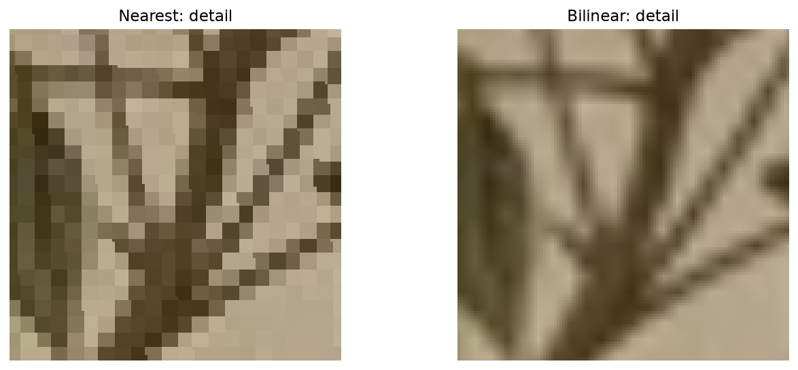
The recovered homography was H = [6.699158e+00, -5.490837e-11, -3.086369e+03; 2.101160e-01, 6.390587e+00, -1.279061e+03; 4.939950e-04, -3.686175e-04, 1.000000e+00], with semicolons separating the rows.
Nearest neighbor looks blockier along the lettering and leaf edges. Bilinear smooths those edges out, though it also softens them. The posters are small in the source photos, so enlarging them cannot bring back fine detail.
| Image | Nearest neighbor | Bilinear |
|---|---|---|
| Birthday poster | 19.1 ms | 39.3 ms |
| Plant poster | 14.2 ms | 46.9 ms |
Nearest neighbor was faster in both cases. It only reads one source pixel per output pixel, while bilinear reads four.
A.4: Blending the Mosaics
I warped each set onto one canvas using bilinear interpolation. Gateway Building and my living room use the right photo as the reference. The Undergrad Academic Building uses the center photo, with each outer photo mapped directly into it.
To soften the seams, I made a weight map that is largest in the middle of each photo and falls off toward the edges. I used the distance to the nearest edge, plus one pixel so the outer border still has a positive weight, and divided by the largest weight. Then I warped the photos and weight maps together and combined them with a weighted average, M(p) = Σᵢ wᵢ(p) Iᵢ(p) / Σᵢ wᵢ(p).
The black borders are areas that none of the warped photos cover.
Gateway Building
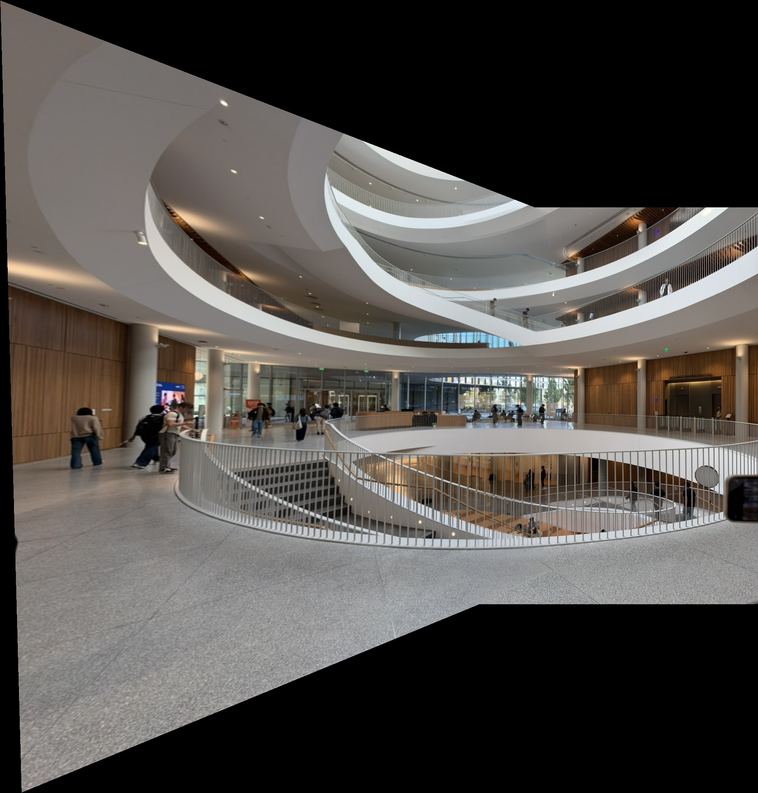
The windows and floor edges line up fairly well. There is still some ghosting around people and railings. Feathering softens the transition, but it cannot make those details agree when they differ between the photos.
Undergrad Academic Building
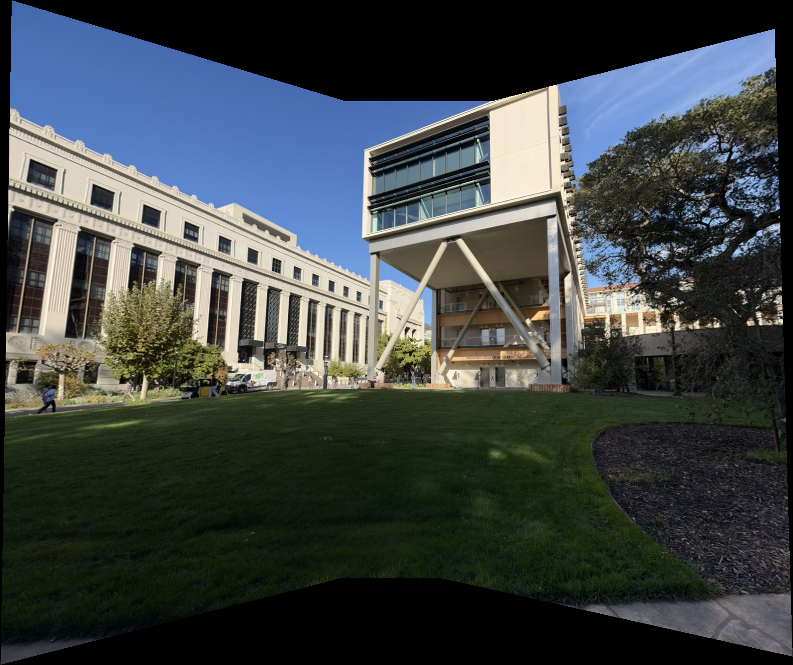
The three views give a wider view of the building and lawn. The building edges line up well, but the sky changes in brightness between photos, so the blend is still visible there.
My living room
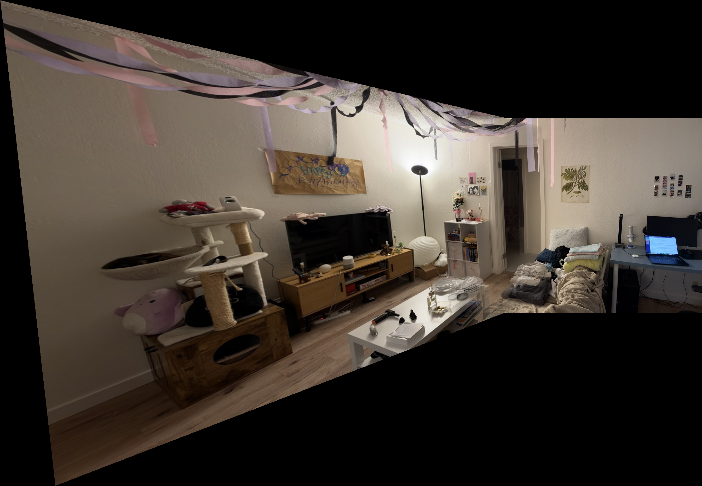
The shelf and doorway line up well around the overlap. The far left looks stretched because it is being projected into the right photo's view. Blending helps with the seam, but it does not remove that perspective effect.